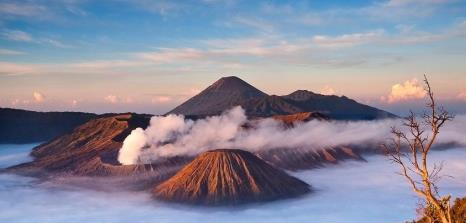
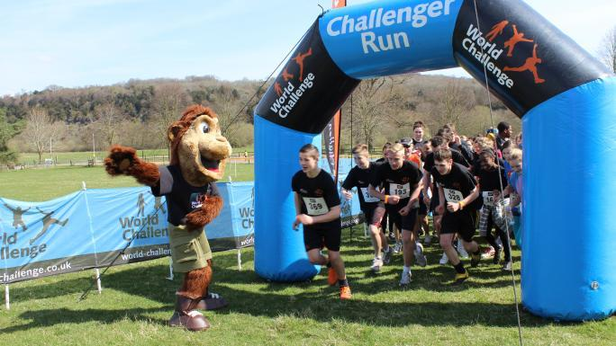

The World Challenge
By Finlay Bryden
You can view the PDF of this articlehere
The World Challenge is a phrase that appears often in Rector's messages or posters around the school. The website has loads of information, but how does it relate to Balwearie? I asked Mrs Slade (Drama teacher) some questions:
What actually happens on this trip?
"There are several phases to the expedition:
planning and preperation, acclimatisation, trekking, project, and 'R and R'"
The first stage,planning and preperation, aims to teach students life skills like teamwork and money management. Vital for trekking is good physical fitness, and this is supported by the Futbess Assistance Pack, designed by experts to help participants exercise in the run-up to the expedition. Expedition skills meetings are also held to prepare students and increase confidence. Skills such as nutrition, budgeting and setting up tents are also covered. After this, there is a training expedition to fully prepare everyone in every aspect of the trek, run by World Challenge instructors.

The acclimatisation phase allows participants to adjust to the culture, temperature or altitude of the destination, often involving short 'introductory treks' to get used to trekking in that environment, or simple challenges like exchanging money or confirming a booking.
The World Challenge's website says:
"The aim of this phase is to get used to the new culture and climate you find yourself in and to start to work through the itinerary as a team."
After these two stages comes the main event: the trekking. A week-long trek in a completely foreign country is no small feat. This could involve travelling on horseback or down rivers, through jungle, desert, or mountains. The trek could take place in any corner of the globe, from jungles in Borneo (pictured above) to mountains in China, and in one of five different continents!
Then comes the project phase: working with a community to make a difference. Also a week long, it is described as "Giving something back to the host country". If any team has a particular skillset it is often utilized and is so important to many Challengers that they decide to extend the duration of the project. This can be community based, establishing a clean water supply or renovating a or building school buildings or conservation tasks, reforistation and marine wildlife.
The final stage is for rest and relaxation. This includes cultural visits and special activities, like zip lining through forests or snorkelling with marine life. More low-key, there could be relaxing on a beach or exploring the museums of a neighbouring city. All of this is very dependent on location, but there are markets on every corner of the globe, ripe with souveniers, so there is always an excuse to go shopping!
This trip lasts four weeks and could be anywhere in the world. It goes without saying, it's not cheap. A month-long expedition normally costs around £4,000, admittedly a lot. However, this doesn't need to be paid for entirely by you. Challengers are expected to raise this money themselves by fundraising or sponsored events, ideas for which are supplied by World Challenge. In addition, sponsored events are held across the U.K. by the company itself. As of 2015, the average entrant raised an additional £221 towards their overall targets.
I asked Mrs Slade what some of her personal highlites were, what the best bits are to look forward to. She said simply "Amazing cultural experiences; leadership oppourtunities; geographical wonders.", In the past, Balwearie High School has taken pupils to Ecuador, Mexico, India, Peru, Bolivia, Tanzania, Madagascar, Mongolia and China. A spot on this life-changing experience is offered to every S3 and S4 pupil. The trip happens every two years, so in August/September 2018 there will be a presentation to S3/4 pupils to get the next batch of interested pupils.
This year, we have 2 groups going to China. Their specific itinerary will come out in January 2018, This month (November 2017) they are going to Aviemore to participate in a Training Weekend of hillwalking and camping.
For more info please visit the world challenge site or speak to Mrs Slade, Mr Booth or Miss Philp.